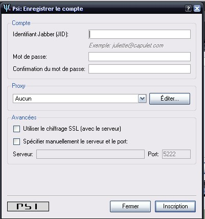
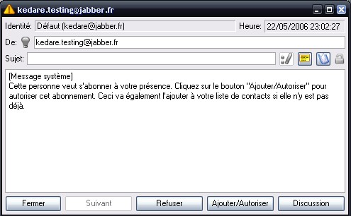
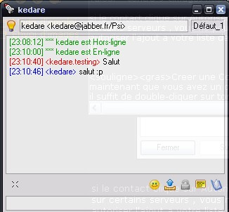
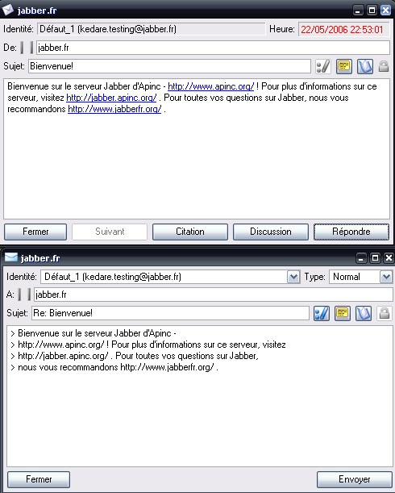
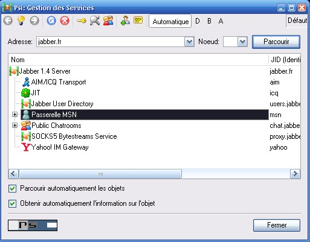

Jabber est d'après beaucoup de monde (dont moi ^^ ) le successeur de MSN-Hotmail. Jabber possède presque l'ensemble des possibilités de MSN, mais connaît quelques limites, comme la conversation vidéo qui dépend en partie du client (cela ne passe pas par les serveurs Jabber, mais par une connexion directe). Jabber a beaucoup d'avantages, comparé à beaucoup d'autres services de chat :
il fonctionne grâce à un standard ouvert : c'est un jeu d'enfant de créer une application qui exploite les possibilités de Jabber : en effet, Jabber utilise une forme du XML qui possède un standard, le XMPP ; on trouve maintenant beaucoup de modules pour certains langages pour exploiter Jabber/XMPP ;
il est décentralisé : Jabber ne sera jamais down, vous pouvez en être sûrs ; il possède des serveurs décentralisés, n'importe qui peut créer, s'il le souhaite, un serveur Jabber ; tous les serveurs sont liés entre eux (il y en a des centaines) ; donc si un serveur a une panne, Jabber continuera quand même à fonctionner ;
c'est un client simple : grâce au XMPP, l'application cliente est extrêmement simple et légère, c'est le serveur qui travaille le plus ; créer un client Jabber est donc très simple ;
il est multi-connexion : avec Jabber, vous avez la possibilité de créer automatiquement des instances pour votre compte, c'est-à-dire que vous pouvez vous connecter à plusieurs endroits sur le même compte ; par exemple, pour communiquer avec une instance, vous devez envoyer un message à : [email protected]/instance ;
il possède une fonctionnalité très pratique, Memo Serveur : Jabber intègre comme ICQ un système de mémos ; quand un message vous est envoyé alors que vous n'êtes pas là, il est stocké sur le serveur, et vous le recevez à votre prochaine connexion ;
il permet une gestion avancée des contacts : la liste des contacts peut être fortement rangée et personnalisée, avec des catégories / sous-catégories ;
il est multi-protocole : un des points forts de Jabber, c'est la possibilité de vous connecter grâce à votre compte Jabber en utilisant une passerelle, sur votre compte MSN, IRC, ICQ et pleins d'autres...
Vous allez maintenant choisir un client. Cela dépend déjà de votre plate-forme. Je vous conseille fortement PSI (http://psi-im.org/).
Installez-le, et lancez-le. Normalement, au premier lancement, vous avez un assistant pour créer un compte. Si ce n'est pas le cas, cliquez sur le bouton en bas à gauche (avec le logo PSI) : Configuration des comptes => Ajouter. Mettez le nom du profil (ce que vous voulez !). Sélectionnez Enregistrer un nouveau compte puis Suivant. Vous devriez avoir ça :

Dans la case JID, mettez l'adresse désirée : attention, la partie après le @ désigne votre serveur ; si vous voulez un compte sur jabber.fr, mettez [email protected]. Mettez votre mot de passe, et la confirmation, puis cliquez sur Inscription... Patientez... l'attente peut quelquefois durer 30 secondes. Vous devriez avoir le message suivant : Le compte a été enregistré avec succès ! Si c'est le cas : félicitations, vous avez créé votre compte. :)
Voilà : maintenant que vous avez votre compte, vous devez commencer à remplir votre liste de contacts !
Ajout d'un contact
Cela est très simple : cliquez sur l'icône PSI (en bas à gauche), sélectionnez Ajout d'un contact, et entrez simplement son adresse ! Ceci enverra une autorisation au contact que vous avez ajouté, sous cette forme :

Si le contact clique sur Autoriser / Ajouter, vous pourrez lui envoyer des messages (hé oui ! sur certains serveurs, vous ne pouvez pas envoyer de message aux personnes qui n'ont pas autorisé l'ajout à votre liste de contacts ! Très efficace contre les spam, même s'il n'y en a pas :p ).
Créer une conversation
Maintenant que vous avez un contact dans la liste, vous voudriez sûrement pouvoir lui parler. Il suffit de double-cliquer sur son nom dans la liste de contacts, et tapez votre message dans la boîte de texte en bas. Voila un aperçu de la fenêtre de conversation :

Envoyer un mémo
Pour envoyer un mémo, un clic droit sur un contact dans la liste de contacts, puis Envoyez un message, Tapez votre message, avec le titre, et la cible (le contact), puis cliquez sur Envoyer. Voilà un aperçu de la fenêtre de réception (en haut) et d'envoi (en bas).

Les mémos ne fonctionnent malheureusement pas avec les passerelles, donc impossible de les utiliser avec les contacts MSN / AIM / ICQ.
Maintenant vous avez votre compte Jabber, vous voulez sûrement pouvoir dialoguer avec vos contacts MSN / ICQ / AIM / Yahoo qui n'ont pas (encore) Jabber. C'est très simple. Cela dépend de votre serveur : si vous êtes sur jabber.fr, vous n'avez pas de passerelle IRC, mais rien ne vous empêche d'utiliser la passerelle de jabber.no par exemple, et sans changer de compte.
Nous allons créer une passerelle MSN dans l'exemple. Menu = > Gestion des services Vous devriez avoir quelque chose comme ceci :

Un clic droit sur Passerelle MSN, puis cliquez sur S'inscrire. Ici vous devez entrer vos login et mot de passe MSN. Ensuite, vous avez un joli spam d'invitation de vos contacts MSN (pour les ajouter à la liste de contacts Jabber) : acceptez-les tous, ils seront automatiquement autorisés. Les formats d'adresses MSN sur jabber sont différents : à la place de [email protected], vous avez pseudo%[email protected] là où jabber.fr est le nom de la passerelle MSN.
XMPP est la forme de XML utilisée dans Jabber ; vous pouvez voir les communications SML en action par ce moyen : Action = > Avancée => Montrer la console XML. Puis cliquez sur Activer. Vous voyez les logs XML défiler quand vous recevez un message ou quand vous en envoyez un. Nous allons apprendre à utiliser XMPP pour communiquer.
1. Envoyer un message
Commençons par le plus simple, la structure pour envoyer un message est celle-ci :
to = le JID de la cible, soit un compte, ou un chan. type = le type d'envoi, chat si c'est pour envoyer à un compte, groupchat pour un chan. id = l'id de la commande, augmente de 1 à chaque commande, je ne sais pas trop à quoi ça sert... from = votre JID ; ne vous amusez pas à mettre un JID qui ne vous appartient pas, vous seriez expulsés du serveur.
Voici quelques liens vers des sites, wikis et forums sur Jabber :
http://www.jabberfr.org/, le plus gros site francophone Jabber, qui propose un forum, un wiki, un cours ; http://www.jabber.org/, le site officiel de Jabber : vous pouvez y trouver la liste des clients / serveurs.
Voilà : vous savez maintenant comment bien utiliser Jabber ! Pensez à parler de Jabber à vos amis sur MSN. :)
Liens relatifs
Le site officiel de Jabber Vous trouverez sur ce site (en anglais) tout ce dont vous avez besoin pour utiliser ou développer des programmes avec Jabber (API, Documentation XMPP, etc.) ;
La communauté Jabber France Je vous recommande grandement d'aller voir le wiki, qui contient beaucoup d'informations utiles (notamment la liste des clients, si vous n'aimez pas PSI), et la liste des programmes serveur existant si jamais ça vous tente de créer un serveur (c'est très simple je vous rassure, surtout avec Wildfire comme serveur). Pensez aussi au forum en cas de problème ;